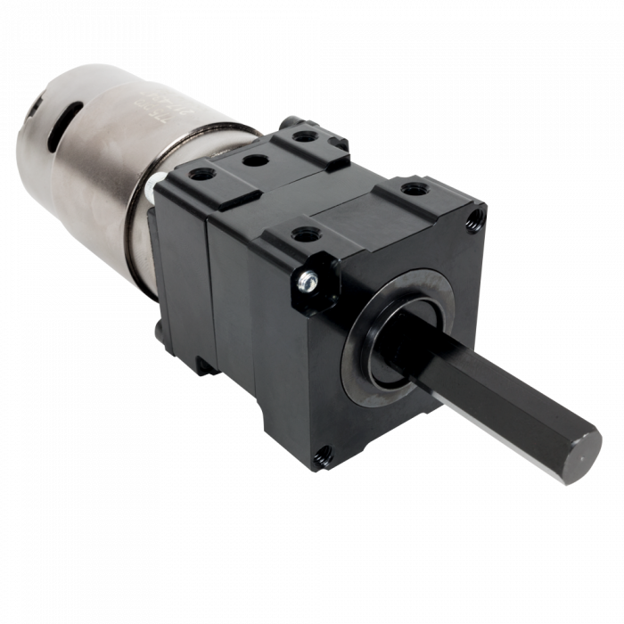
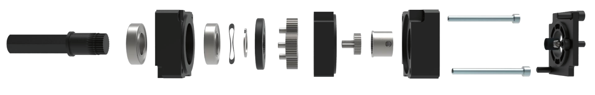

KoiBots
KoiBotsMotors
Your whole robot depends on these. You need to know a lot about them, but first and foremost you need to know if they have the power to do what you want and then how to attach both the motor and the shaft to whatever it is you want to power.
A Primer on Motors from Chief Delphi. You might be able to stop with just reading this 25 page document, which has lots of good links at the bottom.
A good frame of reference is this: everything in your car runs off of 12 volts, as does your robot. So all the things that move in your car are done with 12v motors. This includes mirrors, sunroofs, windows, doors, seats, windshield wipers, etc. 
Gearboxes will take what is typically an extremely fast motor (18,000 rpm) with low torque, and change it to a more useful output of speed and torque.These typically fall into two broad categories, planetary gearboxes and open gearboxes. Planetary gear sets screw directly to the motor making them very convenient; they are also easy to get just the right gear ratio. Some gearboxes have shifting capabilities as well, typically used for drivetrains where high speed across the field and low torque or precise maneuvering are needed at the destination. 
This image above is a Versa planetary gearbox. The motor would be mounted to the right and the output shaft on the left. Which brings up the next issue with motors, how to attach to the output shaft and how to mount the motor?
Extra Resources
VEX Motors: Link takes you to power curves, showing speeds & torquesAndyMark: On this page are links to scads of gearbox products and data
VEX: Known for their Versa Planetary gearbox, along with other gearboxes